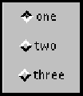

java.lang.Object | +----java.awt.CheckboxGroup
public class CheckboxGroup
extends Object
implements Serializable
The CheckboxGroup class is used to group together a set of Checkbox buttons.
Exactly one check box button in a CheckboxGroup can be in the "on" state at any given time. Pushing any button sets its state to "on" and forces any other button that is in the "on" state into the "off" state.
The following code example produces a new check box group, with three check boxes:
setLayout(new GridLayout(3, 1));
CheckboxGroup cbg = new CheckboxGroup();
add(new Checkbox("one", cbg, true));
add(new Checkbox("two", cbg, false));
add(new Checkbox("three", cbg, false));
This image depicts the check box group created by this example:
